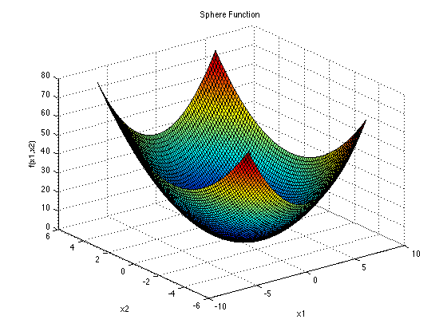

3. Getting Started¶
NEORL tries to follow a typical machine-learning-like syntax used in most libraries like sklearn and keras.
Here, we describe how to use NEORL to minimize the popular sphere function, which takes the form
\[f(\vec{x}) = \sum_{i=1}^d x_i^2\]
The sphere function is continuous, convex and unimodal. This plot shows its two-dimensional (\(d=2\)) form.
{kind=link}
The function is usually evaluated on the hypercube \(x_i \in [-5.12, 5.12]\), for all \(i = 1, …, d\). The global minimum for the sphere function is:
\[f(\vec{x}^*)=0, \text{ at } \vec{x}^*=[0,0,...,0]\]
Here is a quick example of how to use NEORL to minimize a 5-D (\(d=5\)) sphere function:
#---------------------------------
# Import packages
#---------------------------------
import numpy as np
import matplotlib.pyplot as plt
from neorl import DE, XNES
#---------------------------------
# Fitness
#---------------------------------
#Define the fitness function
def FIT(individual):
"""Sphere test objective function.
F(x) = sum_{i=1}^d xi^2
d=1,2,3,...
Range: [-100,100]
Minima: 0
"""
return sum(x**2 for x in individual)
#---------------------------------
# Parameter Space
#---------------------------------
#Setup the parameter space (d=5)
nx=5
BOUNDS={}
for i in range(1,nx+1):
BOUNDS['x'+str(i)]=['float', -100, 100]
#---------------------------------
# DE
#---------------------------------
de=DE(mode='min', bounds=BOUNDS, fit=FIT, npop=50, CR=0.5, F=0.7, ncores=1, seed=1)
x_best, y_best, de_hist=de.evolute(ngen=120, verbose=0)
print('---DE Results---', )
print('x:', x_best)
print('y:', y_best)
#---------------------------------
# NES
#---------------------------------
x0=[-50]*len(BOUNDS)
amat = np.eye(nx)
xnes=XNES(mode='min', bounds=BOUNDS, fit=FIT, npop=50, eta_mu=0.9,
eta_sigma=0.5, adapt_sampling=True, seed=1)
x_best, y_best, nes_hist=xnes.evolute(120, x0=x0, verbose=0)
print('---XNES Results---', )
print('x:', x_best)
print('y:', y_best)
#---------------------------------
# Plot
#---------------------------------
#Plot fitness for both methods
plt.figure()
plt.plot(de_hist['global_fitness'], label='DE')
plt.plot(np.array(nes_hist['fitness']), label='NES')
plt.xlabel('Generation')
plt.ylabel('Fitness')
plt.legend()
plt.close() #change to plt.show() for inline plot